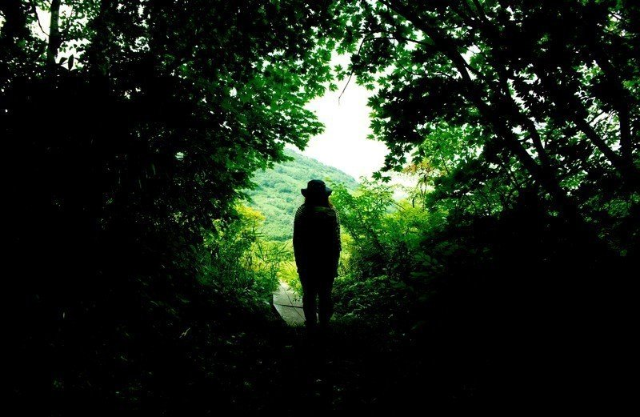

「もうどうにでもなれ……」
電車の中でそう独り言を呟いた。
父の縁故で大企業に入れたものの、ハードな仕事づけの毎日に身体も心もボロボロだった。入社してから早3ヶ月、やっぱり自分には無理だったんだと思い知らされる。
電車に揺られながら、キーホルダー型のフォトフレームに入っている祖父の写真を見た。
「こんなんじゃ、天国で怒ってるだろうな」
終電の電車の中では、疲れ切ったサラリーマンの溜息と大学生の若い話し声が入り混じっている。僕はつい最近まで学生の立場にいたのか……。今ではもう完全に社会人の仲間入りだというのに。
そんなことを思いながら、電車は家の最寄り駅である終点に到着した。ホームに降りると、何となく今朝出社した時とは違う雰囲気を感じた。
「疲れているのか……」
そう思いながら、家の方へと歩き出した。
眠気と戦いながら、一歩ずつ道を進む。しかし、徐々に周りの様子がおかしいことに気がついた。
住宅街を通るいつもの道が、舗装されていない道になっており、しかも周りの家の造りも古い木造や蔵造りのものに変わっている。まるで江戸時代にやってきたみたいに。
「どうなっているんだ。夢でも見ているのか」
そんな風に驚いているうちに、なぜか日も昇ってきた。慌てて携帯電話を取り出してみると、電源が入らない。腕時計を見ても、深夜0時過ぎを指したまま動いていない。
いつの間にか僕の住んでいる街はどうかしてしまったのである。
立ち止まっていても仕方がないので、僕は闇雲に歩き続けた。
そうすると、賑やかな商店街のような場所に辿り着いた。様々なものが売りに出されている。しかし、それより別のところに驚いた。
人々の恰好が着物にちょんまげ、はたまた西洋の服や今どきの服を着た者もいたりと様々な時代の服装をしているのである。
どういうことなんだ……。唖然としていると、1人見慣れた顔を茶屋で見つけた。あれは祖父だ！
「おお、お前か！」
祖父は驚いた顔をした。
5年前に亡くなった祖父は最期まで弱音を吐かず旅立っていった。あの厳かな姿は未だに胸に焼きついている。
今、目の前にいる祖父はよく着ていたおしゃれなYシャツ姿だ。
「どうした？ 随分と早くに来たな。とりあえずお前も柏餅食べるか？」
祖父は手に持っていた柏餅を笑顔で勧めてきたが、やんわりと断り単刀直入に聞いてみた。
「ここは一体どこなの？」
祖父は柏餅を飲み込んだ後、
「そりゃここは……」
と言いかけた。その時、
「あんた、こんなところにいたのかい！」
3年前に亡くなった祖母の声が聞こえてきた。
「あら、お前も随分早く来ちまったねえ」
祖母は僕に向かってそう言った。
2人が並んだ姿なんて久しぶりに見たから、山ほど聞きたいことがあったのにすっかり忘れてしまった。
そんなことにはお構いなしに祖母は続ける。
「この人もまるで変わってしまってねえ。死ぬ前はあんなに無口でつまらない人間だったのに、こっちに来てからは生まれ変わったかのように生き生きしちゃって。いや、命はないんだから生まれ変わっちゃいないか」
そう言って、祖母は大声で笑った。
「違う、まだ死んでなんかいない！」
思わずそう叫んだ。
「そうか。なら現世行きの電車で早く戻りなさい」
祖父は冷静な顔でそう言った。
駅までの道順を教えてもらい、乗り遅れないように走り出そうとした。その瞬間、祖父は強い力で僕の腕を掴んでこう言った。
「死ぬも生きるもそう違いなんてない。ただ自分の居場所が変わるだけだ。生死を問わず、人は旅人。だからどこにいても、楽しむ心を持ちなさい。同じ旅などどこにもないのだから」
駅に着き、何とか現世行きの電車に駆け込んだ。
車内で乱れた呼吸を少しずつ落ち着かせ、さっき会った祖父の写真を見た。
「もう少し楽しんでみるか。今の居場所で」
そう独り言を呟くと、写真の中の祖父は優しく微笑んでいるように見えた。